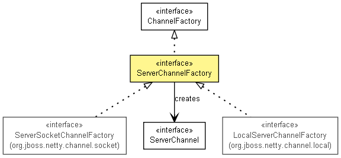

org.jboss.netty.channel
接口 ServerChannelFactory
- 所有超级接口：
- ChannelFactory, ExternalResourceReleasable
- 所有已知子接口：
- LocalServerChannelFactory, ServerSocketChannelFactory
- 所有已知实现类：
- DefaultLocalServerChannelFactory, NioServerSocketChannelFactory, OioServerSocketChannelFactory
public interface ServerChannelFactory
- extends ChannelFactory

创建一个ServerChannel的ChannelFactory.
newChannel
ServerChannel newChannel(ChannelPipeline pipeline)
- 从接口
ChannelFactory 复制的描述
- 创建和打开一个新的
Channel,并使用指定的 ChannelPipeline附加到新的
Channel.
- 指定者：
- 接口
ChannelFactory 中的 newChannel
- 参数：
pipeline - 准备附加到新Channel的ChannelPipeline
- 返回：
- 返回新的通道